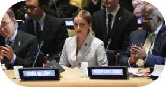

Grâce à la saga de film "Harry Potter", Emma Watson est devenue une star mondiale. Actrice talentueuse et icône de beauté, énormément de personne apprécie l'actrice britannique. Ces dernières années, elle s'est montrée une femme engagée et une vraie militante féministe !
Emma Watson
Emma Watson naît le 15 avril 1990 à Paris. Ses parents sont un couple d'avocats britanniques qui font leurs métiers en France. En 1995, après le divorce de ses parents, elle retourne avec sa mère en Angleterre. C'est à l'âge de 10 ans qu'elle commence sa carrière d'actrice pour le premier film "Harry Potter" : Harry Potter à l'école des sorciers. Elle devient soudainement connue grâce à ce rôle. Malgré ses rôles au cinéma, elle continue ses études. En 2014, elle est diplômée à l'université Brown en littérature anglaise.
Quand on parle d'Emma Watson, on pense forcément au personnage d'Hermione Granger. Effectivement, c'est ce rôle qui a montré son talent au grand jour et qui lui a permis d'acquérir une notoriété exceptionnelle. En 2007 sort le cinquième film de la franchise, les acteurs principaux signent un deuxième contrat. Étant donné que les acteurs sont en fin d'adolescence, les critiques autours de leurs prestations vont commencer à être de plus en plus rude.
Une icône mondiale
Cependant, ils s'en sortent à merveille et les prestations d'Emma Watson sont mis en avant. Au sixième volet, le Washington Post souligne la performance de l'actrice en indiquant que c'est "sa plus charmante interprétation à ce jour".
En 2011, la saga s'arrête et l'actrice entame de nouveaux projets. Elle a notamment joué dans La Belle et la bête en 2017. Le film a été un gros succès avec plus d'un milliard de dollars de recettes !
En 2014, elle devient ambassadrice de bonne volonté d'ONU Femmes. C'est le début pour elle de sa vie de féministe.
Ms. Foundation for Women, une ONG américaine, donne à l'actrice le titre de "personnalité féministe de l'année" en 2014 (Voir frise). Ce titre montre tout l'engagement qu'elle a eu ces dernières années. En effet, elle est considérée comme une porte-parole des femmes. C'est une militante très investit. Par exemple, elle a versé un million d'euros à l'association "Justice and Equality", une association qui lutte contre le harcèlement sexuel. Elle transmet aux femmes des valeurs de force et de détermination dans le combat des égalités homme-femme.
Emma Watson à l’ONU
De nouveau en 2016, elle réalise un discours aux Nations Unies sur les agressions sexuelles. Ce discours, basé sur les violences dans les campus universitaires, a été très médiatisé car, il a été jugé d'inspirant et d'éblouissant.
« L'expérience universitaire doit dire aux femmes qu'elles ont une valeur intellectuelle, et pas que ça : qu'elles ont leur place dans les hautes sphères »
Elle soutient les étudiantes victimes d'agressions sexuelles avec des paroles fortes : "L'expérience universitaire doit dire aux femmes qu'elles ont une valeur intellectuelle, et pas que ça : qu'elles ont leur place dans les hautes sphères" ou même "Une université devrait être un endroit où se réfugier, qui met en place des actions à l'encontre de toutes les formes de violence". Elle dénonce l'inefficacité des campus en termes de protections et de mise en avant des femmes.
Emma Watson aujourd’hui
Malgré une carrière d'actrice mise un peu de côté. Aujourd'hui, Emma Watson continue de se mobiliser dans le combat auprès des femmes ! Son engagement lui permet d'être une des féministes les plus influentes.